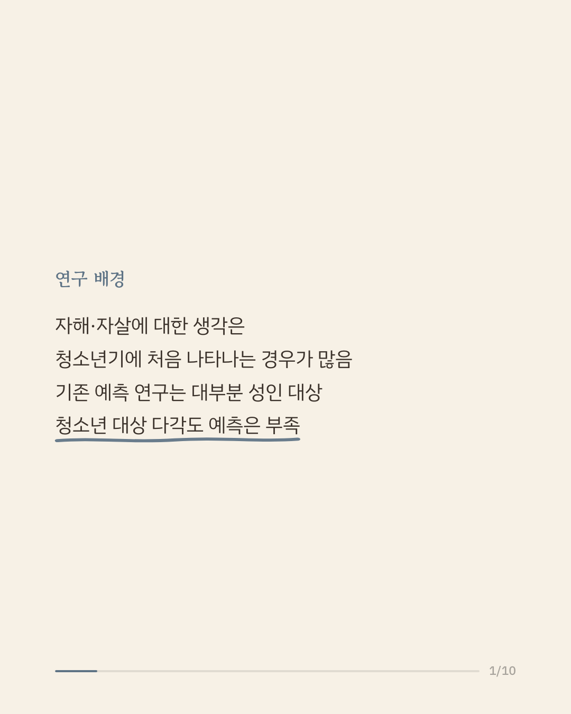
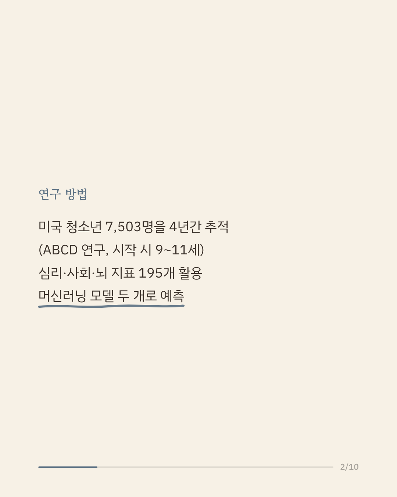
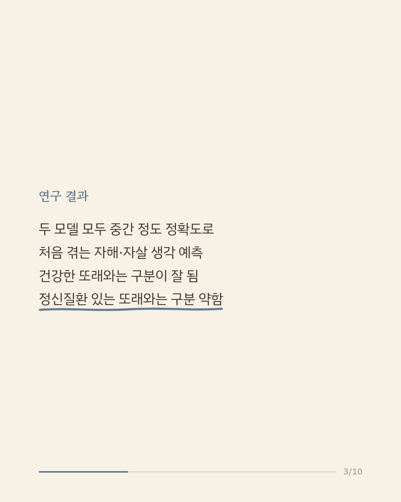
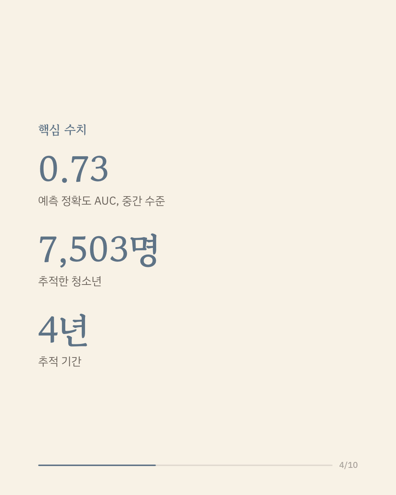
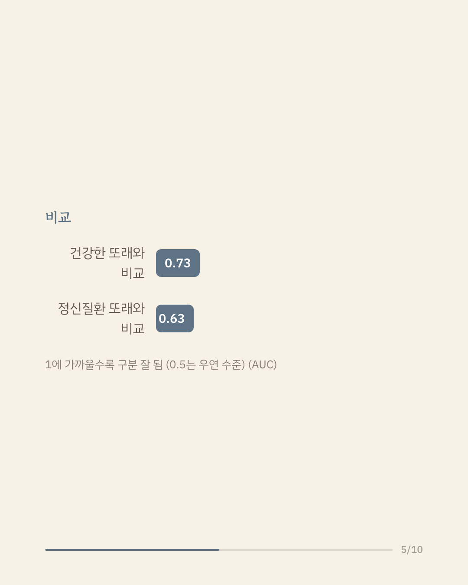
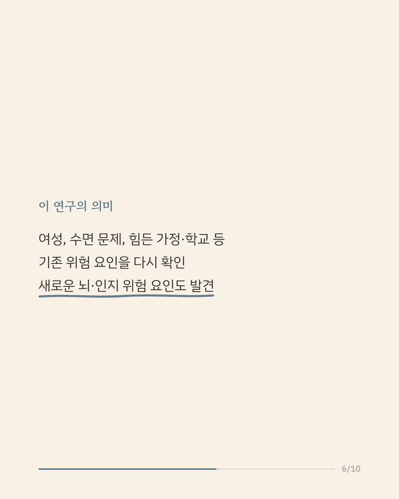
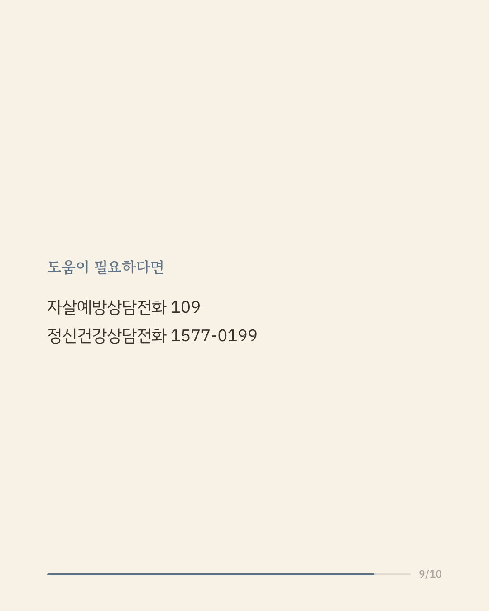
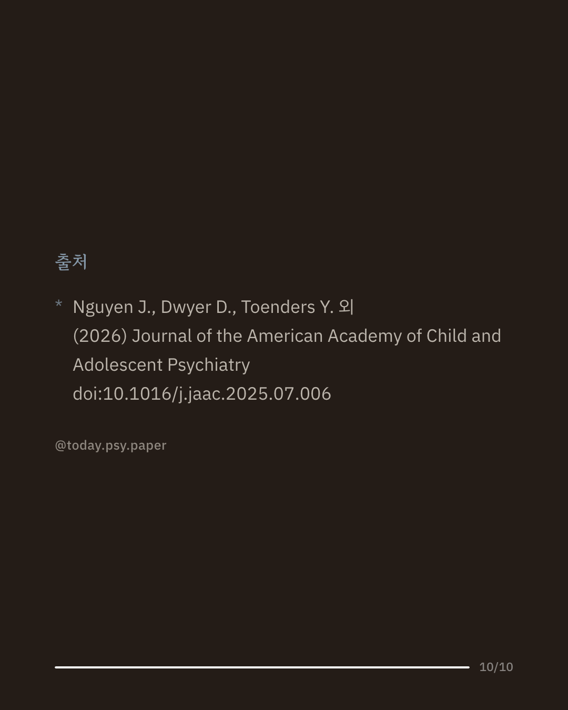

자해나 자살에 대한 생각은 청소년기에 처음 나타나는 경우가 많지만, 그동안의 예측 연구는 주로 성인을 대상으로 했거나 활용한 정보의 종류가 제한적이었습니다. 청소년기에 이런 어려움을 처음 겪는 사람을 미리 알아볼 수 있다면 도움을 더 일찍 연결할 수 있습니다. 연구진은 미국 청소년 7,503명을 4년간 추적한 대규모 자료(ABCD 연구)에서 심리·사회·뇌 지표 195개를 활용해 머신러닝 모델 두 개를 시험했습니다. 두 모델 모두 처음 겪는 자해·자살 관련 생각을 중간 정도의 정확도로 예측했습니다. 건강한 또래와 구분할 때는 비교적 잘 맞았지만, 정신질환이 이미 있는 또래와 구분하는 일은 더 어려웠습니다. 여러 모델에서 공통으로 두드러진 요인은 여성, 수면 문제, 그리고 힘든 가정·학교 환경과 관련이 있었습니다. 이 연구는 기존에 알려진 심리적 위험 요인을 다시 확인하는 한편 새로운 뇌·인지 관련 요인도 찾아냈다는 점에서 의미가 있습니다. 다만 예측 정확도는 중간 수준이어서 임상 현장에 바로 적용하기에는 이르고, 더 다양하고 큰 표본에서의 검증이 필요합니다. 단일 연구이므로 확대 해석은 조심해야 합니다. 출처: Journal of the American Academy of Child and Adolescent Psychiatry (2026), 'Predicting the First Onset of Suicidal Thoughts and Behaviors in Adolescents Using Multimodal Risk Factors: A 4-Year Longitudinal Study' 힘든 마음이 들 때는 자살예방상담전화 109, 정신건강상담전화 1577-0199에서 도움을 받을 수 있습니다. #임상심리 #정신건강정보 #청소년정신건강 #자살예방 #심리학연구
python3 publish.py 40681146